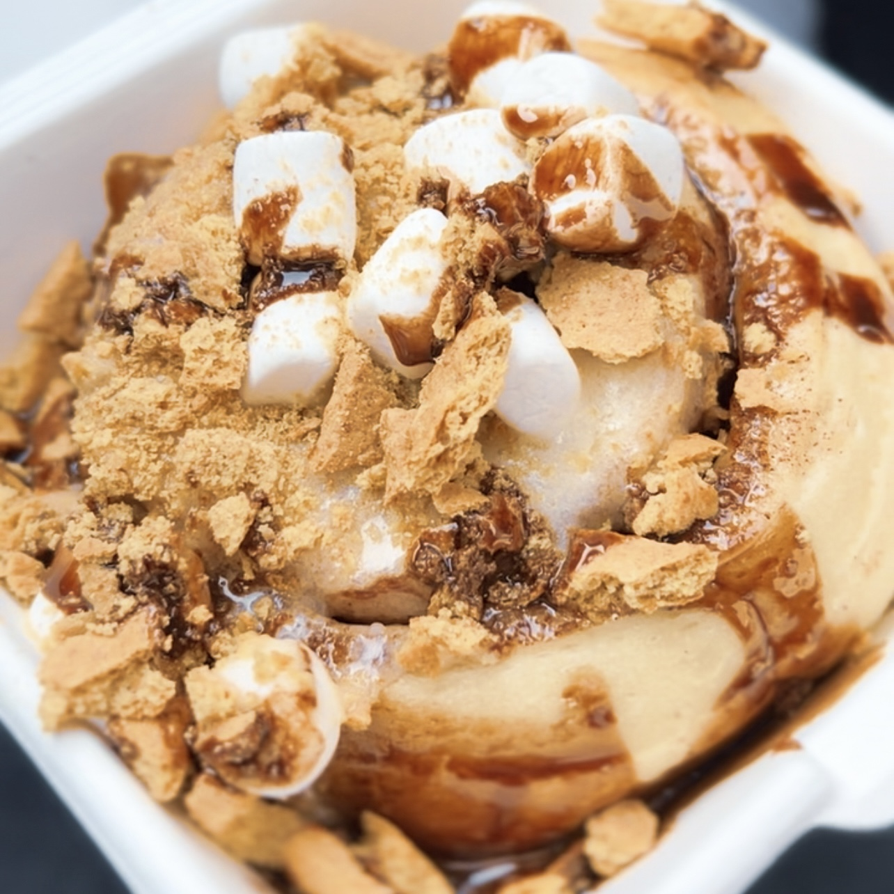

A Sweet Experience at Cinnaholic Des Moines
April 7th, 2022
Welcome to our comprehensive guide to the best food spots in Des Moines! Whether you're a local or just visiting, this guide will help you discover the hidden gems and popular spots that make Des Moines a foodie's paradise.
Farm-to-Table Restaurants
Des Moines is known for its farm-to-table restaurants that bring fresh, locally sourced ingredients to your plate. One of our favorites is...
Artisanal Coffee Shops
If you're a coffee lover, Des Moines won't disappoint. The city boasts several artisanal coffee shops that serve up some of the best brews...
Hidden Gems
While Des Moines has its popular spots, there are also plenty of hidden gems waiting to be discovered. One such place is...
We hope this guide helps you explore the best of Des Moines. Stay tuned for more foodie adventures!